1798
The metre was originally defined by 1⁄10000000 the distance between the poles and the Equator. One ten-millionth of the Earth's half-circumference. The planet itself was the standard. 1 metre. 1⁄10000000 part of one half of the earth. So minute and yet, everything you have ever touched, existed here, in some form, in some way.
The metre was once a prototype, arbitrary, uncertain. The human condition is not.
The picnic near the lakeside in Chicago was the start of a lazy afternoon early one October. It begins with a scene one meter wide which we view from just one meter away. Now every ten seconds we will look from ten times farther away and our field of view will be ten times wider. Autumn light on the shore of Lake Michigan.
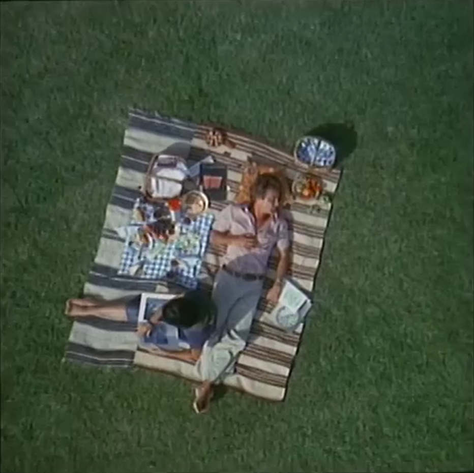
A field of view you could cross in a single step. This is where the journey begins. And where it will end.
100
1 meter
1960
The metre redefined as 1,650,763.73 wavelengths of the orange-red emission line in the spectrum of krypton-86, measured in vacuum. For the first time, a measurement reproducible anywhere in the universe. Not tied to any object, any place, or any planet.
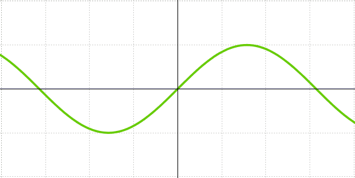
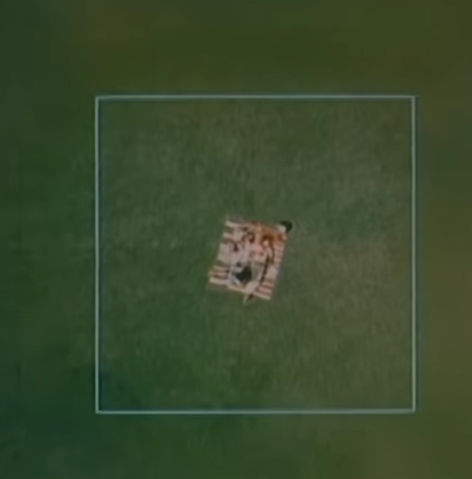
This square is ten meters wide and in ten seconds the next square will be ten times as wide. Our picture will centre on the picnickers even after they’ve been lost to sight.
101
10 meters
1977
One hundred meters wide, the distance a man can run in ten seconds, cars crowd the highway, power boats lie at their docks, the colourful bleachers are Soldier Field.
The scale at which Charles and Ray Eames chose to begin an argument that changed how a generation understood its own smallness.
People watched, in awe, excitement, fear, wonder.
How does it make you feel?
I feel...
The film did not teach you the size of the universe. It made you feel it, briefly, in a darkened room, before you walked back out into the ordinary scale of a human afternoon.
102
100 meters
1983
The metre redefined as the length of the path travelled by light in a vacuum in 1⁄299,792,458 of a second. The speed of light was fixed by definition. Distance became a function of time. The metre became, in the most literal sense, a measurement of how far light can go.
Since 1983, the constant c has been defined in the International System of Units (SI) as exactly 299792458 m/s; this relationship is used to define the metre as exactly the distance that light travels in vacuum in 1⁄299792458 of a second. The second is, in turn, defined to be the length of time occupied by 9192631770 cycles of the radiation emitted by a caesium-133 atom in a transition between two specified energy states.[15]
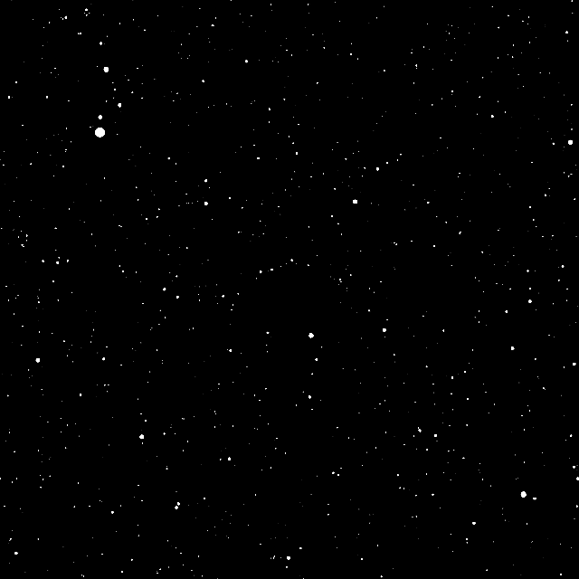
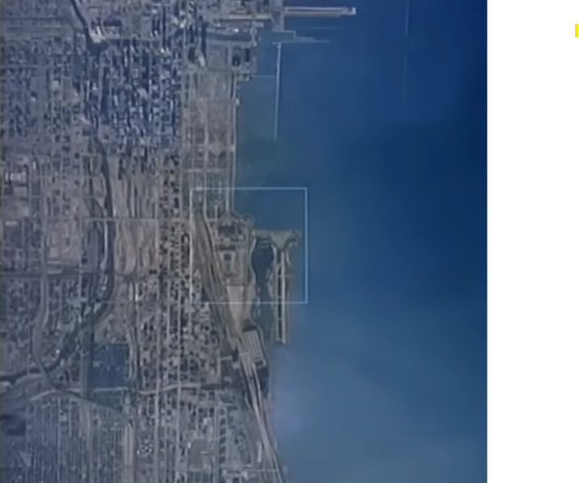
Light defines the metre now. The same light that travels from this picnic, upward, through atmosphere, into space, the light we have been following ever since we left.
103
1000 meters
2000
Ten to the fourth meters, ten kilometres, the distance a supersonic aeroplane can travel in ten seconds. We see first around and the end of Lake Michigan, then the whole Great Lake.
The Great Lakes are the largest group of freshwater lakes on Earth by total area and the second-largest by total volume. They contain more than 20% of the world's surface fresh water by volume.
The Great Lakes began to form at the end of the Last Glacial Period around 14,000 years ago, as retreating ice sheets exposed the basins they had carved into the land, which then filled with meltwater.
The Great Lakes began to form at the end of the Last Glacial Period around 14,000 years ago, as retreating ice sheets exposed the basins they had carved into the land, which then filled with meltwater.
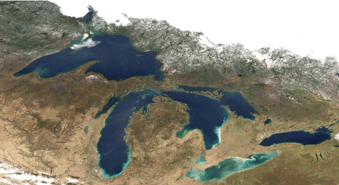
Water levels across all five Great Lakes have begun to drop in recent months as part of a long-term fall. Since 2019, the Great Lakes have seen water-level decreases of two to four feet. While experts say this is a natural decrease given the record highs the lakes have experienced since 2020, it’s happening at a time when a huge new consumer of water has appeared on the horizon: data centers.
Microsoft is building what it calls the “world’s most-powerful AI data center” to open this year, and expected to use up to 32 million litres of water from the city of Racine every year. Racine gets its water from Lake Michigan.
The picnickers are still down there.
10,000m below us. They have no idea.
They cannot hear us, they have no idea this is happening.
No idea of what is to come.
Microsoft is building what it calls the “world’s most-powerful AI data center” to open this year, and expected to use up to 32 million litres of water from the city of Racine every year. Racine gets its water from Lake Michigan.
The picnickers are still down there.
10,000m below us. They have no idea.
They cannot hear us, they have no idea this is happening.
No idea of what is to come.
104
10,000 meters
2026
Ten to the fifth meters, the distance a hovering satellite covers in ten seconds, long parades of clouds, the day’s weather in the Middle West.
100 kilometres. You are at the edge of space. Below you, everything. Above you, infinity. And between those two things, the only air we have.
It won't drift off. But it is changing. You can't see that with your eyes from here. It looks the same as it did in 1977, in 1798, in the morning the first human looked up and decided the sky went on forever. It doesn't look different. It is different. The difference is in the chemistry, in the heat it's holding, in what it does now when a storm gets going over the Gulf or a heatwave parks itself over a city for three weeks and just sits there.
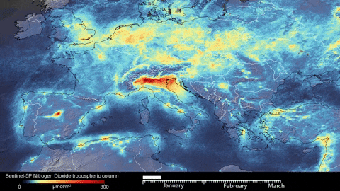
In eight minutes, driving straight up on an empty road, you'd be here. Eight minutes from the picnic. Eight minutes from October. The whole of the atmosphere between you and the void is eight minutes thick. We have been filling it, one mistake, one purchase, one pollutive gas at a time. That's all it took.
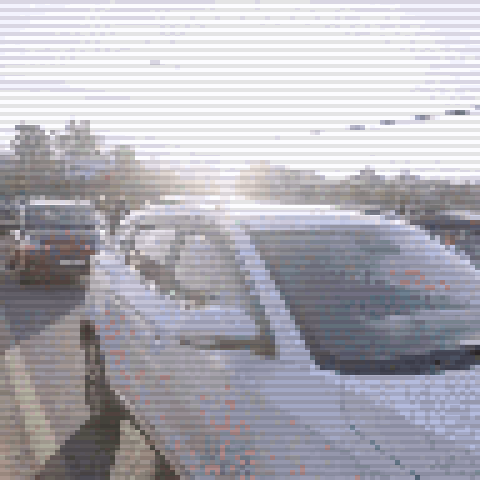
105
100,000 meters
⚠
warning | warning | warning | warning | warning | warning | warning | warning | warning | warning | warning | warning | warning | warning | warning | warning | warning | warning | warning | warning | warning | warning | warning | warning | warning | warning | warning | warning | warning | warning | warning | warning | warning | warning | warning | warning | warning | warning | warning | warning | warning | warning | warning | warning | warning | warning | warning | warning | warning | warning | warning | warning | warning | warning | warning | warning | warning | warning | warning | warning | warning | warning | warning | warning | warning | warning | warning | warning | warning | warning | warning | warning | warning | warning | warning | warning | warning | warning | warning | warning | warning | warning | warning | warning | warning | warning | warning | warning | warning | warning | warning | warning | warning | warning | warning | warning | warning | warning | warning | warning | warning | warning | warning | warning | warning | warning | warning | warning | warning | warning | warning | warning | warning | warning | warning | warning | warning | warning | warning | warning | warning | warning | warning | warning | warning |
approaching point of no return. please change path. consider affects of your actions. there is no planet B.
the window is closing. perhaps, close this window, and enjoy some last time outside.
10⚠
1
approaching point of no return. please change path. consider affects of your actions. there is no planet B.
the window is closing. perhaps, close this window, and enjoy some last time outside.
10⚠
1
2050
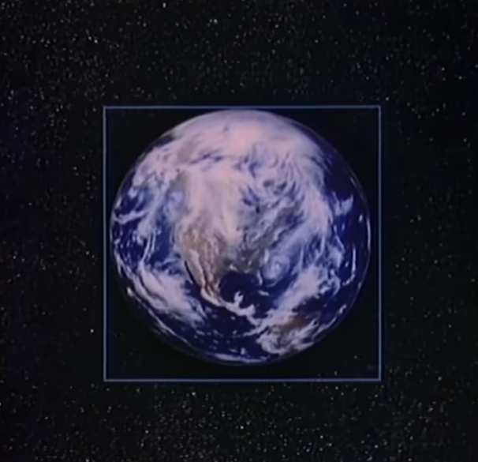
We are able to see the whole Earth now, just over a minute along the journey. The Earth diminishes into the distance but those background stars are so much farther away that they do not yet appear to move. A line extends at the true speed of light. In one second, it half crosses the tilted orbit of the moon.The picnickers have long since packed up and gone home, had children, grown old. The city they drove through is still there, mostly. Some of it is underwater now. Just a little more each year, a little more each decade. From here it looks the same as it always did. Blue, white and beautiful.
107
10 million meters
2075
Ten to the twenty-1 second power, a million light years, groups of galaxies bring a new level of structure to the scene, glowing points are no longer single stars but whole galaxies of stars, seen as one. We pass a big vulgar cluster of galaxies among many others, a hundred million light years out. As we approach the limit of our vision, we pause to start back home. This lonely scene, the galaxies like dust, is what most of space looks like. This emptiness is normal. The richness of our own neighbourhood is the exception.
This emptiness is normal.
The richness
of our own neighbourhood
is the exception.
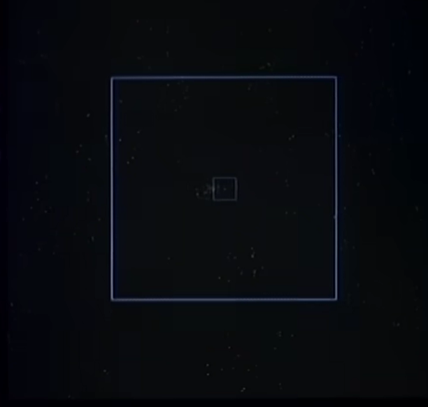
1022
1 million light years
help.
is not coming.
it is us. who need to save us.
10∞
2052
At ten to the minus ten meters, one ångstrom, we find ourselves right among those outer electrons. Now we come upon the two inner electrons held in a tighter swarm. As we draw toward the atom’s attracting centre, we enter upon a vast inner space. At last the carbon nucleus. So massive and so small.
This carbon nucleus is made up of six protons and six neutrons. We are in the domain of universal modules. There are protons and neutrons in every nucleus. Electrons in every atom. Atoms bonded to every molecule out of the farthest galaxy.
As a single proton fills our scene we reach the edge of present understanding. Are these some quarks of intense interaction?
Our journey has taken us through forty powers of ten.
If now the field is one unit then when we saw many clusters of galaxies together, it was ten to the fortieth or one and forty zeros.
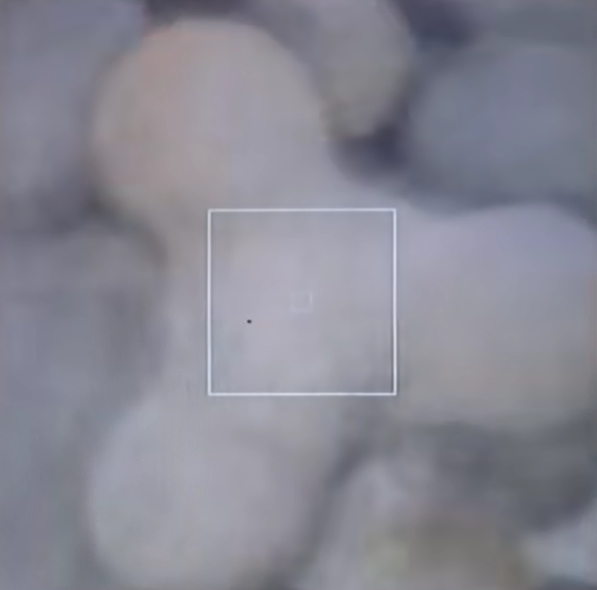
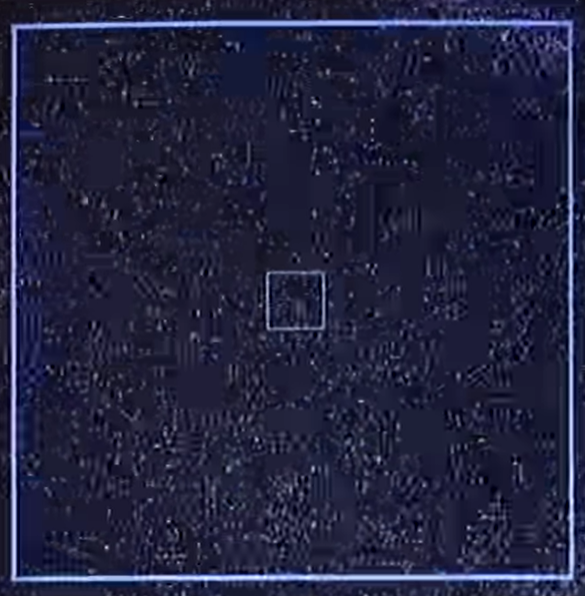
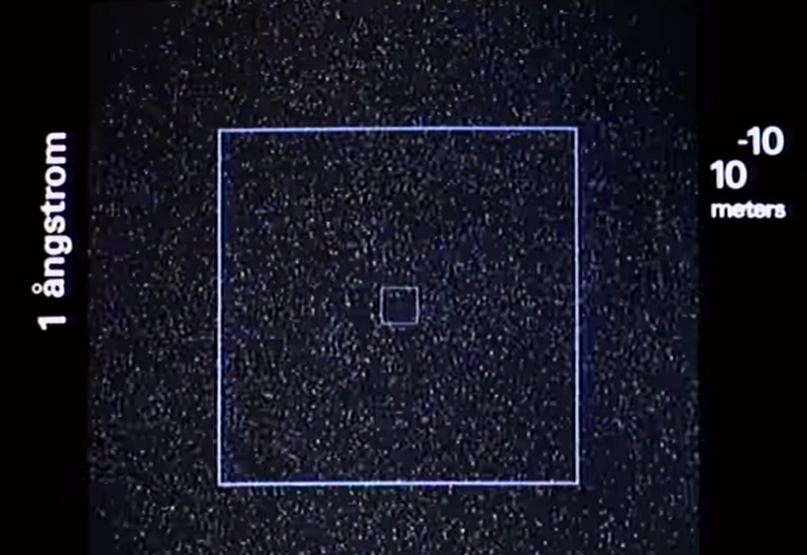
doesn't this look familiar?
reduced to atoms, we are made of the same thing our planet was,
10-10
1 angstrom
✨
stardust
We come from the stars.
We yearn for the stars.
to know what is out there.
to find anything, anyone, out there.
We yearn for the stars.
to know what is out there.
to find anything, anyone, out there.
We need to care for our planet.
And we will return to the stars.
our gift from the stars.
And we will return to the stars.
10✨
deep breath in.
deep breath out.
aaaaaaaaaaaaaaaaaaaaaaaaaaaaaaaaaaaaaaaaaaaaaaaaaaaaaaaaaaaaaaaaaaaaaaaaaaaaaaaaaaaaaaaaaaaaaaaaaaaaaaaaaaaaaaaaaaaaaaaaaaaaaaaaaaaaaaaaaaaaaaaaaaaaaaaaaaaaaaaaaaaaaaaaaaaaaaaaaaaaaaaaaaaaaaa
June, 2026
volume 1 | issue 3
volume 1 | issue 3
CDS3001.
Planetary Publishing.
Planetary Publishing.
the beginning.
website by avril keenan.
words originally
from Ray and Charles Eames.
from Ray and Charles Eames.